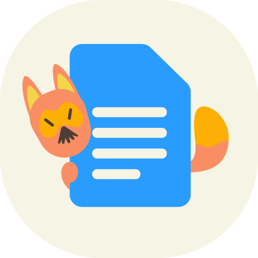
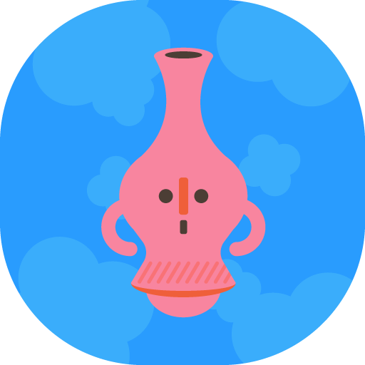
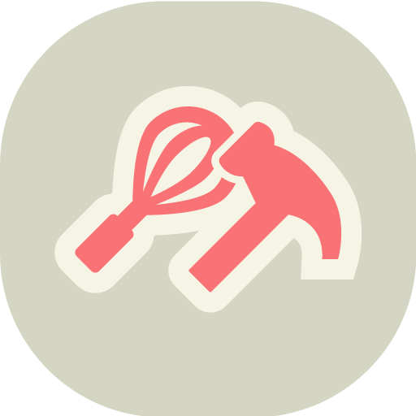
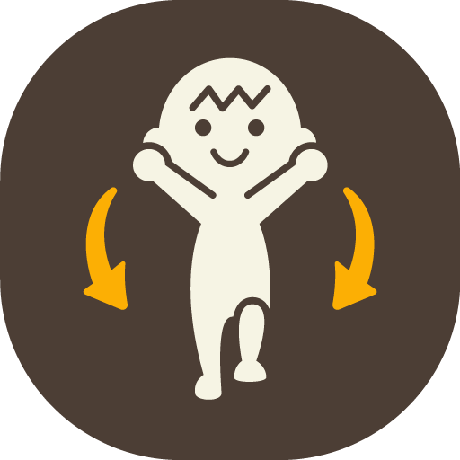

NookPhone

HOJE NO PAPEL A3 (10m = 1mm)
0 min • 0.0 mm (0.0% do dia)

Relógio de Ponto

Acadêmico
Pesquisa
Trabalho
Bem-estar00:00:00
Conversão automática: 0 min (0.0 mm)

Nook Miles & Escala
0 / 1440 min
0.0% do dia
CONVERSÃO GEOMÉTRICA (10m = 1mm)
0.0 mm (0.00 cm)

Streaks & Selos de Performance
🔥 Streak Ativo: 0 dias seguidos
⭐ Recorde Diário: 0 min
📅 Semana / Mês / Ano: 0m / 0m / 0m

Câmera do Diário

Acervo do VPS
Toque em "Atualizar" para abrir as cartas do servidor.

Sincronia & Ajustes

Bolso Offline do Aparelho
Nenhum item aguardando envio.